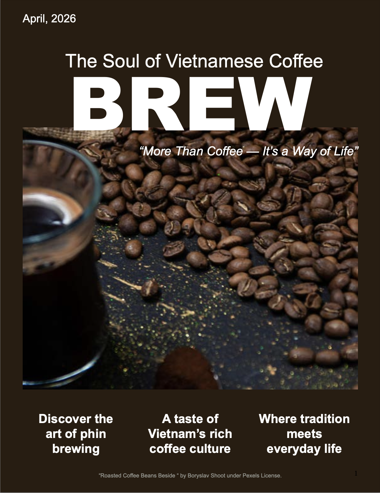
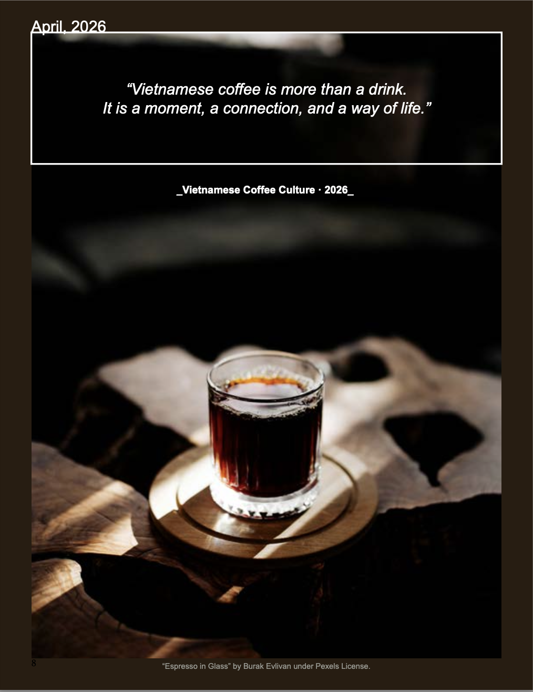

Magazine Preview


BREW is an editorial magazine about Vietnamese coffee culture. The concept focuses on how coffee is more than a drink — it is a daily ritual, a cultural habit, and a way for people to connect.


The final magazine creates a warm and immersive reading experience that reflects the feeling of Vietnamese coffee culture. Through dark coffee tones, soft beige backgrounds, bold typography, and image-focused layouts, BREW communicates the idea that coffee is not rushed — it is meant to be experienced.
Back to Projects